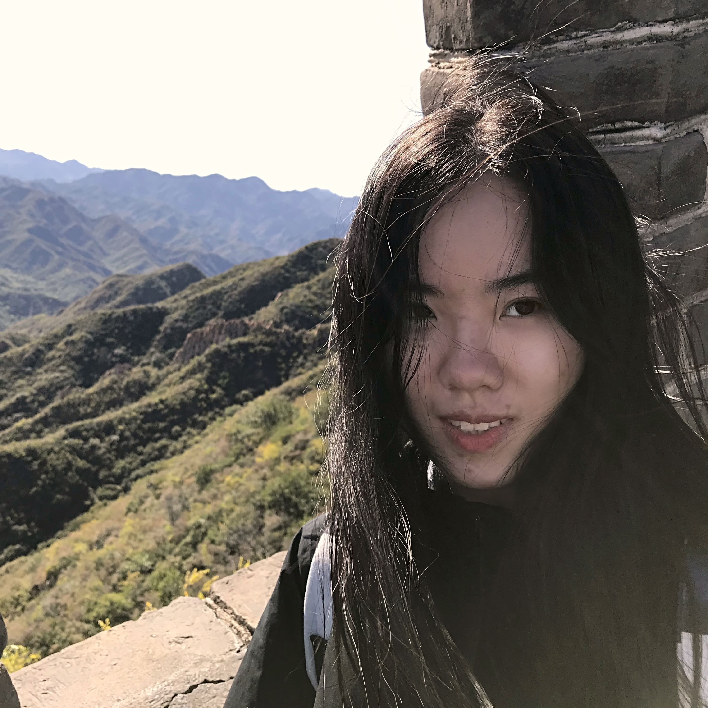
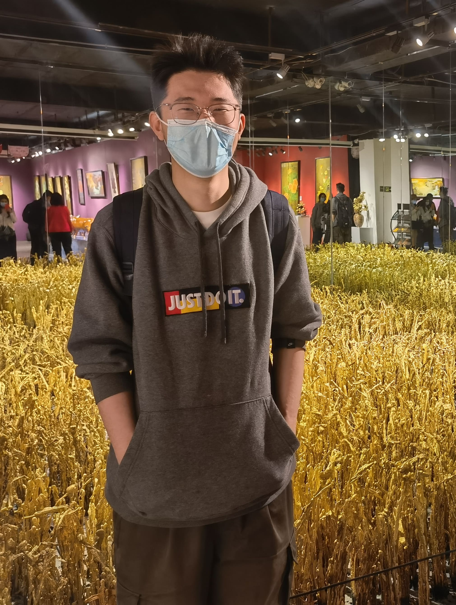
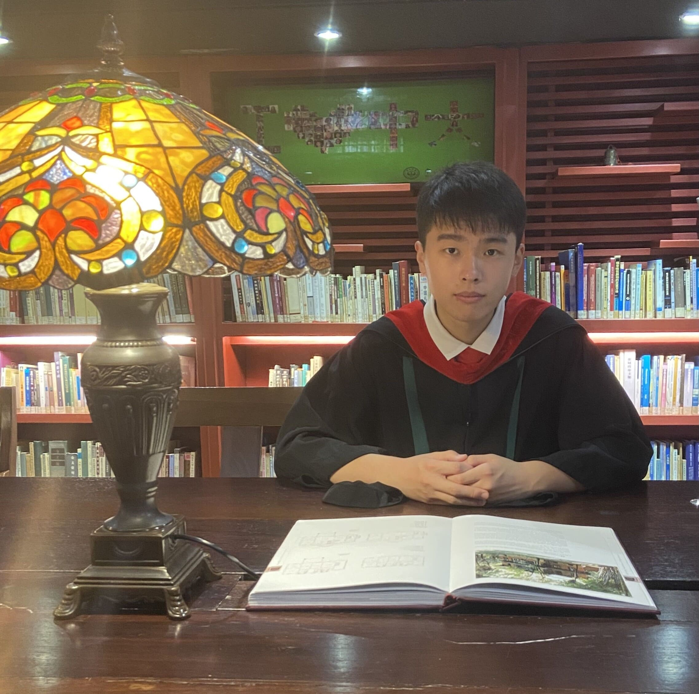
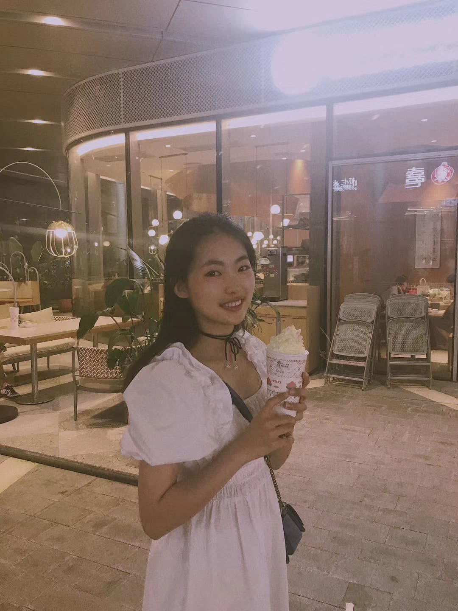
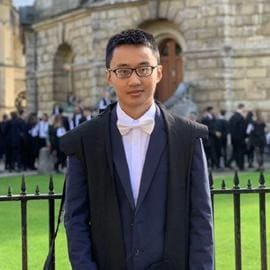
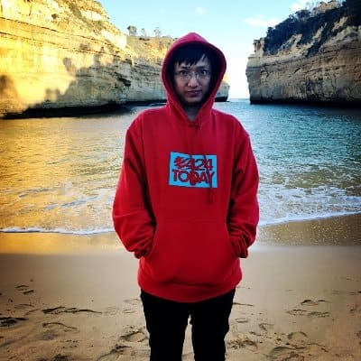

| Best Photo |
Known As |
Research Interests |
Favourite Quote |
Programming Language |
|  |
Chang Ma, Ph.D. student |
representation learning, latent variable models, computational biology |
Research is formalized curiosity. |
Python |
 |
Yiheng Xu, Ph.D. student |
natural language processing, multimodal pretraining |
Rise above. Focus on science. |
Python |
|  |
Tianbao Xie, Ph.D. student |
dialog systems, spoken language understanding, pre-trained models, semantic parsing |
Although with repeated experience of setbacks, I have encountered many difficulties and overcome many difficulties, which make me gradually believe that everything will get better if I insist on it again. However, sometimes I am still moved by these sudden luck and objectively reflect on everything I need to reach this step. Every now and then, I appreciate life, appreciate for its small blessings. |
Python |
|  |
Lin Zheng, Ph.D. student |
natural language processing, structured prediction, latent variable models |
I visualize a time when we will be to robots what dogs are to humans, and I'm rooting for the machines. - Claude Shannon |
Python |
|  |
Qintong Li, Ph.D. student |
machine learning, natural language processing, knowledge reasoning |
To make each day count. |
Python |
|
Jiahui Gao, Ph.D. student collaborator |
natural language processing, cross-modal(vision-language) learning |
Be curious. Take risks. |
Python, R |
|  |
Qi Liu, Assistant Professor |
language models, dialogue, graph neural networks, blockchain |
The best way to predict the future is to create it. |
Python, Java, LaTeX |
 |
Tao Yu, Assistant Professor |
semantic parsing, dialog systems, natural language interfaces, HCI |
This guy is too lazy to leave a word so far. |
Python, LaTeX, SQL |
|  |
Lingpeng Kong, Assistant Professor |
representation learning, structured prediction |
Take pains. Be perfect. - William Shakespeare |
Python, C++, LaTeX |